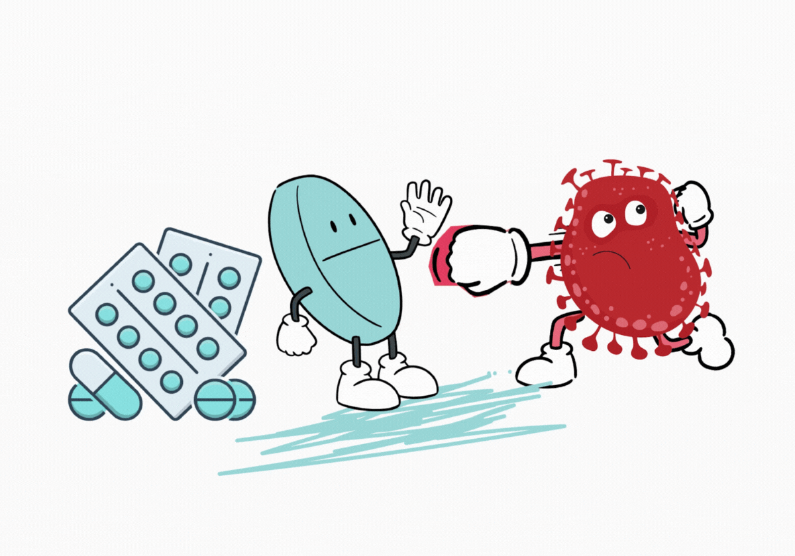

Cuida tu salud: Uso responsable de los medicamentos

Los medicamentos son esenciales para mantener la salud, pero su uso inadecuado puede causar efectos secundarios graves. En esta página aprenderás cómo usarlos correctamente, conocerás datos curiosos y escucharás consejos importantes para cuidar tu bienestar.
¿Qué pasa cuando te automedicas?
Este video nos muestra cómo la automedicación puede causar más daño que beneficio. Aunque parezca una solución rápida, tomar medicamentos sin receta puede ocultar síntomas importantes o generar resistencia a los antibióticos.
Escucha y aprende
Antes de tomar cualquier medicamento, recuerda que tu salud no es un experimento. Consultar a un profesional puede marcar la diferencia entre sanar y empeorar.
¿Sabías que...?
| Más del 60% de las personas se automedican. | |
| Los antibióticos no curan los virus. |  |
| Guardar mal un medicamento puede hacerlo menos efectivo. |